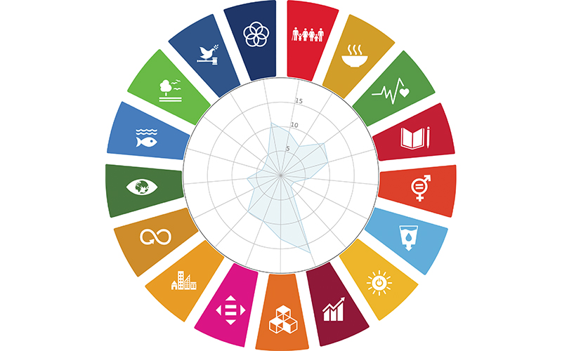

MAPEO DE INICIATIVAS CIUDADANAS
La metodología se enfoca en el mapeo de ideas de emprendimiento por medio de dinámicas basadas en los ejes sectoriales de Plan Estatal de Desarrollo.
El Ideatón se llevó a cabo a través de una metodología innovadora para obtener información y propuestas de ideas de emprendimiento abordando los principales desafíos en su comunidad, llevado a cabo en fases que van desde la identificación y sensibilización de la problemática local hasta la propuesta de ideas de emprendimiento como posibles soluciones.
ETAPAS
- Inspiración: Introducción y reconocimiento de áreas de oportunidad en la localidad.
- Ideación: Generación y planteamiento de posibles ideas para los desafíos planteados.
- Implementación: Elaboración y comprobación de la idea de proyecto de emprendimiento.
- Visualización: Presentación de resultados y datos abiertos por medio de plataforma web.
forma de trabajo
El taller de duración de 6 horas por sede, planteaba una forma dinámica de participación ciudadana en cada una de sus fases, extrayendo la información necesaria para sumar al Plan Estatal de Desarrollo al igual de servir de capacitación para los participantes en cuestión del conocimiento del imaginario colectivo en relación a los problemas locales, conocimiento de los Objetivos de Desarrollo Sostenible de la Agenda 2030 de la ONU y la generación de ideas de emprendimiento a partir de procesos participativos.